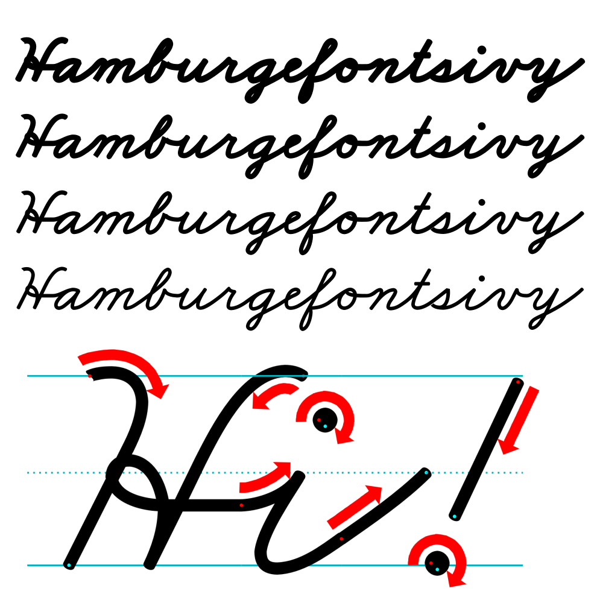
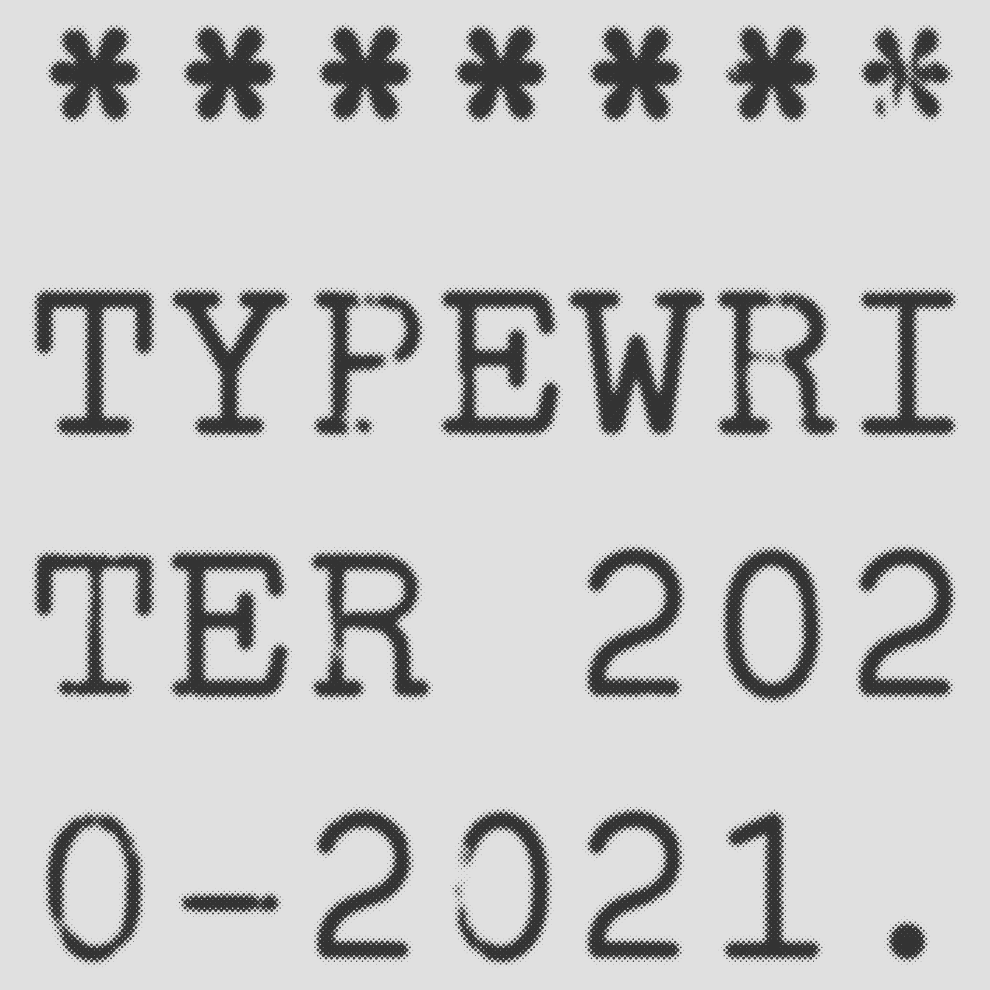
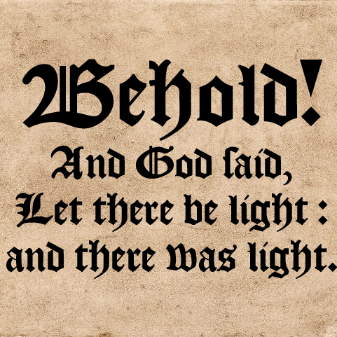
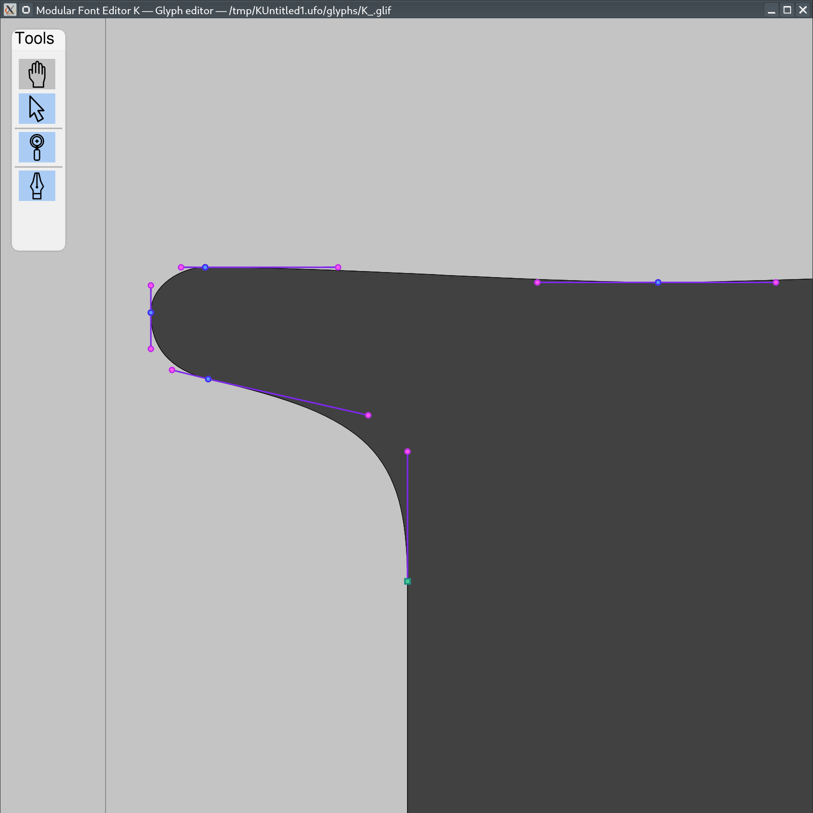
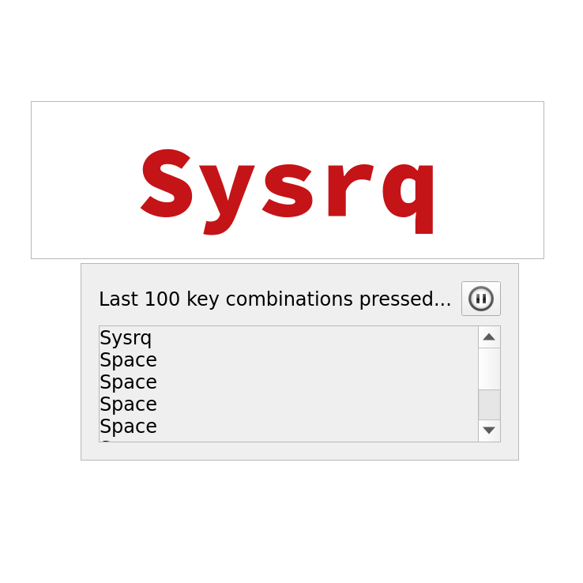
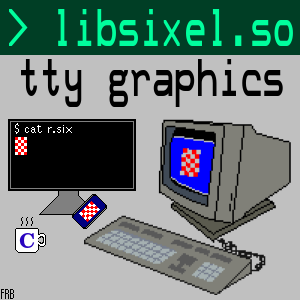

Fonts
The creation of fonts is the main way I spend my time—mostly my own fonts, however I also occasionally work on those of others when they are licensed in a way conducive to that.
All of my fonts are freely licensed for personal and commercial use. Also, the source code is all freely available, and I don't use proprietary software in my build processes. Mainly, FontForge and fontmake are required; for more information on building, see the individual font documentation.

FRB American Cursive

A Zaner–Bloser style textbook cursive font family. The full family contains ≈ 70 fonts.
TT2020

A typewriter font family that randomizes each glyph for improved realism above conventional typewriter fonts.

The italic version of TT2020, based on the IBM® Selectric™’s “Light Italic”. The specimen here comes from a 2021 article in The Urban Legend by Cooper Makhijani, and is used with permission.
Chomsky
A blackletter font in the style of the New York Times masthead. Complete Latin support.
Some Time Later

A font in the style of the one used in the credits and title cards of the TV show SpongeBob SquarePants.
Info & download » Jellyfish photo by Ishikawa Ken
{kind=link}
Besley Small Caps

Besley Small Caps is my take on Owen Earl's Besley. I added small caps to it, and made this version which comes in two versions: one with small caps by default, Besley SC, and then my version of Besley which has a smcp OpenType table.
KJV 1611

A blackletter font made to look exactly like the one used in the 1611 King James Bible.
Quaerite Regnum Dei

A font based on the handwriting in the Misal rico de cisneros. Contains many alternates.
FRB Cistercian

An OpenType font for the Cistercian numerals; includes a PUA encoding.
Noto Sans / Serif Tagalog

Two baybayin variable fonts designed for Google Android. Implements my baybayin Unicode proposals.†
FRB Taiwanese Kana

An OpenType font for horizontal and vertical typesetting of Taiwanese kana. Based on Noto Serif CJK JP.
desalph OpenType font

This is a restoration of Kenneth R. Beesley's desalph METAFONT font, hopefully the beginning of a series of such restorations.
† I previously worked on a font based on Noto Sans Tagalog, OpenBaybayin. That font is now deprecated, the two OpenType Variable (OTvar) fonts I made for Google are better in every respect.
Unicode papers
Armenian

Proposal to make changes needed for the correct encoding and documentation of the Armenian abbreviation mark
(Co-authored with Hrant Papazian.)
Baybayin
Kana Extended-B
Software
Modular Font Editor K
MFEK is a project to build a new free and open source (FOSS) font editor from a collection of smaller programs, in alignment with the Unix philosophy.
MFEKglif

MFEKglif is an as yet alpha quality glyph editor for the UFO .glif format.
QKeysOnScreen

QKeysOnScreen displays Linux evdev events (keyboard/mouse input primarily) on the screen, to make presentations about software and computing easier to follow.
Open source contributions
I only use open source software in both my work on Unicode and my work on fonts. This often requires me to patch or become involved in projects I haven't written. I am a co-maintainer of FontForge and operate its Twitter @FontForge. I also have substantially contributed to SILE, the Kitty terminal emulator, Simon Cozens' fontFeatures / feeLib project, and various other projects used in font engineering. I also had the honor of sponsoring and contributing technically where I could to the development of Matthew Blanchard's MFEKstroke.
libsixel

libsixel displays DEC SIXEL graphics in various terminal emulators. I took over maintenance of this project in 2021, with Nick Black.